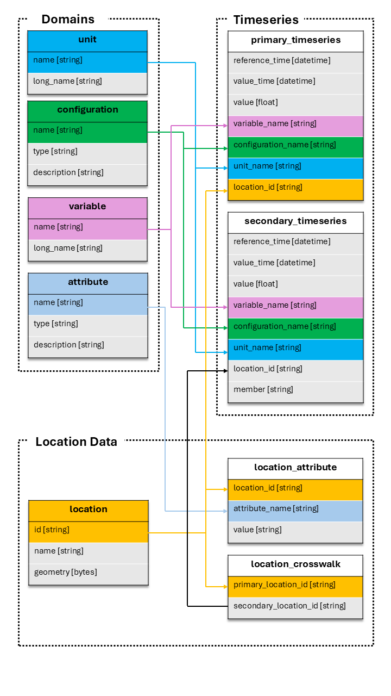

Tables#
Tables are the core data structures in TEEHR. They represent persistent Iceberg tables that store your evaluation data. This section covers the table schema, loading methods, querying, and method chaining.
The TEEHR Schema#
TEEHR uses a structured schema with three categories of tables:
{kind=link}

Domain Tables (small reference data, CSV-like):
units- Measurement units (e.g., “m3/s”, “ft3/s”)variables- Variable names (e.g., “streamflow_hourly_inst”)configurations- Data source configurations (e.g., “nwm30_retrospective”)attributes- Attribute definitions (e.g., “drainage_area”, “ecoregion”)
Location Data:
locations- Point geometries with IDs (e.g., USGS gage locations)location_attributes- Attribute values for each locationlocation_crosswalks- Maps primary IDs to secondary IDs (e.g., USGS to NWM)
Timeseries Data:
primary_timeseries- Observed/reference data (e.g., USGS streamflow)secondary_timeseries- Simulated/forecast data (e.g., NWM outputs)
Accessing Tables#
There are two ways to access a table:
import teehr
ev = teehr.LocalReadWriteEvaluation(dir_path="./my_eval")
# Method 1: Named property (for standard tables)
locs = ev.locations
pts = ev.primary_timeseries
sts = ev.secondary_timeseries
# Method 2: Generic accessor (for any table)
pts = ev.table("primary_timeseries")
custom = ev.table("my_custom_table") # User-defined tables
Both methods return a table object with the same methods.
Table Methods Overview#
All tables inherit common methods from the BaseTable class:
Output Methods:
to_sdf()- Return a PySpark DataFrame (lazy)to_pandas()- Return a Pandas DataFrame (eager)to_geopandas()- Return a GeoPandas GeoDataFrame (eager)
Query Methods:
filter()- Apply filtersorder_by()- Sort resultsaggregate()- Calculate metrics with groupingadd_calculated_fields()- Add computed columnsadd_geometry()- Join geometry from locations table
Output Operations:
write()- Write results to a new table
Table Management:
is_core_table-Trueif this table is a built-in TEEHR tabledrop()- Drop a user-created (non-core) table from the catalog
Loading Data#
Tables have methods to load data from various file formats. The loading process validates data against the table schema and handles duplicates.
Loading Timeseries Data#
Primary and secondary timeseries tables support multiple formats.
From Parquet:
ev.primary_timeseries.load_parquet(
in_path="./data/observed.parquet",
field_mapping={
"datetime": "value_time",
"discharge": "value",
"site_no": "location_id"
},
constant_field_values={
"configuration_name": "usgs_observations",
"variable_name": "streamflow_hourly_inst",
"unit_name": "m3/s"
},
location_id_prefix="usgs"
)
See also: PrimaryTimeseriesTable.load_parquet()
From CSV:
ev.secondary_timeseries.load_csv(
in_path="./data/forecasts/",
pattern="**/*.csv",
field_mapping={
"forecast_time": "reference_time",
"valid_time": "value_time",
"flow": "value"
},
constant_field_values={
"configuration_name": "my_model_v1",
"variable_name": "streamflow_hourly_inst",
"unit_name": "m3/s"
}
)
See also: SecondaryTimeseriesTable.load_csv()
From NetCDF:
ev.secondary_timeseries.load_netcdf(
in_path="./data/model_output.nc",
field_mapping={"streamflow": "value"},
constant_field_values={"configuration_name": "model_run_001"}
)
See also: SecondaryTimeseriesTable.load_netcdf()
From FEWS PI-XML:
ev.primary_timeseries.load_fews_pixml(
in_path="./data/observed.xml",
location_id_prefix="fews"
)
See also: PrimaryTimeseriesTable.load_fews_xml()
Loading Parameters#
Common parameters for loading methods:
field_mappingdictMaps source column names to TEEHR schema names:
{"source_col": "teehr_col"}
constant_field_valuesdictSets constant values for fields not in source data:
{"configuration_name": "my_config", "unit_name": "m3/s"}
location_id_prefixstrPrefix added to location IDs for uniqueness:
location_id_prefix="usgs" # "12345" becomes "usgs-12345"
write_modestr"insert"- Insert all rows directly (no duplicate checking, fastest)"append"- Add new data, skip duplicates (default)"upsert"- Update existing, add new"create_or_replace"- Replace entire table
drop_duplicatesboolRemove duplicate rows during validation (default: True)
Loading Location Data#
Load locations from GeoJSON or other spatial formats.
ev.locations.load_spatial(
in_path="./data/gages.geojson"
)
See also: LocationTable.load_spatial()
Load location attributes.
ev.location_attributes.load_csv(
in_path="./data/attributes.csv"
)
See also: LocationAttributeTable.load_csv()
Load crosswalks.
ev.location_crosswalks.load_csv(
in_path="./data/crosswalk.csv",
field_mapping={
"usgs_id": "primary_location_id",
"nwm_id": "secondary_location_id"
}
)
See also: LocationCrosswalkTable.load_csv()
Loading Domain Data#
Domain tables can be populated manually.
# Or add individual records
ev.configurations.add(
teehr.Configuration(
name="my_model",
timeseries_type="secondary",
description="My custom model"
)
)
See also: ConfigurationTable.add()
Using DataFrames#
You can also load from Pandas/GeoPandas DataFrames:
import pandas as pd
df = pd.DataFrame({
"location_id": ["usgs-01234"],
"value_time": ["2024-01-01 00:00:00"],
"value": [100.5],
"variable_name": ["streamflow_hourly_inst"],
"unit_name": ["m3 s-1"],
"configuration_name": ["usgs_observations"]
})
ev.primary_timeseries.load_dataframe(df)
Filtering Data#
Filter tables to select specific subsets of data.
SQL String Filters:
ev.primary_timeseries.filter(
"location_id LIKE 'usgs%'"
).to_sdf().show()
ev.primary_timeseries.filter([
"value_time > '2024-01-01'",
"value_time < '2024-02-01'"
]).to_sdf().show()
Dictionary Filters:
ev.primary_timeseries.filter({
"column": "location_id",
"operator": "like",
"value": "usgs%"
}).to_sdf().show()
TableFilter Objects:
from teehr.models.filters import TableFilter
from teehr import Operators as ops
ev.primary_timeseries.filter(
TableFilter(column="value", operator=ops.gt, value=100)
).to_sdf().show()
See also: PrimaryTimeseriesTable.filter()
Method Chaining#
Table methods return self to enable fluent method chaining:
from teehr import RowLevelCalculatedFields as rcf
from teehr import DeterministicMetrics as dm
# Chain multiple operations
result = (
ev.joined_timeseries_view()
.filter("primary_location_id LIKE 'usgs%'")
.add_calculated_fields([rcf.Month(), rcf.WaterYear()])
.aggregate(
metrics=[
dm.KlingGuptaEfficiency(),
dm.RelativeBias()
],
group_by=["primary_location_id", "month"]
)
.order_by(["primary_location_id", "month"])
.to_pandas()
)
Writing Results#
Write query results to new tables:
# Calculate metrics and save to a new table
ev.joined_timeseries_view().aggregate(
metrics=[dm.KlingGuptaEfficiency()],
group_by=["primary_location_id", "configuration_name"]
).write_to("location_metrics")
# Access the new table
metrics_df = ev.table("location_metrics").to_pandas()
You can also load DataFrames directly into tables using
load_dataframe():
import pandas as pd
df = pd.DataFrame({
"name": ["m3/s"],
"long_name": ["Cubic meters per second"]
})
# Load using the table property
ev.units.load_dataframe(df)
# Or using the generic table accessor
ev.table("units").load_dataframe(df)
# Specify write mode (default is "append")
ev.units.load_dataframe(df, write_mode="upsert")
Write modes available:
"insert"— fastest: INSERT INTO with no duplicate checking"append"— skip rows that match existing uniqueness fields (default)"upsert"— update matching rows, insert new ones"overwrite"— replace all data, preserving table history
Note
"insert" uses a plain INSERT INTO statement and does not check for
duplicates. Use it when you know your data is clean and want maximum throughput.
Use "append" (the default) when you want to skip rows that already exist.
See also: BaseTable.load_dataframe()
Deleting Data#
There are two equivalent ways to delete rows from a table.
Via a table instance (ev.table().delete() or ev.primary_timeseries.delete()):
# Dry run — preview rows that would be deleted
sdf = ev.table("primary_timeseries").delete(
filters=["location_id = 'usgs-01234567'"],
dry_run=True,
)
print(f"Rows to delete: {sdf.count()}")
# Execute deletion on a named table property
count = ev.primary_timeseries.delete(
filters=["location_id = 'usgs-01234567'"],
)
print(f"Deleted {count} rows.")
# Delete all rows
count = ev.primary_timeseries.delete()
Via the write interface (ev._write.delete_from()):
count = ev._write.delete_from(
table_name="primary_timeseries",
filters=["location_id = 'usgs-01234567'"],
)
print(f"Deleted {count} rows.")
Both methods support SQL strings, dicts, and
TableFilter objects as filter arguments:
from teehr.models.filters import TableFilter
from teehr import Operators as ops
# Dict filter
count = ev.primary_timeseries.delete(
filters={"column": "configuration_name", "operator": "=", "value": "old_run"},
)
# TableFilter object
count = ev.primary_timeseries.delete(
filters=TableFilter(
column="configuration_name",
operator=ops.eq,
value="old_run"
),
)
See also:
Dropping Tables#
User-created tables (such as materialized views and saved query results) can be
dropped when they are no longer needed. Core TEEHR tables (like primary_timeseries
and locations) are protected and cannot be dropped.
Use the is_core_table
property to check whether a table is a core table before attempting to drop it.
Drop a user-created table via the table instance:
# Write a user-created table
ev.joined_timeseries_view().aggregate(
metrics=[dm.KlingGuptaEfficiency()],
group_by=["primary_location_id"]
).write_to("location_metrics")
# Check whether it's a core table (always False for user-created tables)
ev.table("location_metrics").is_core_table # False
# Drop the table
ev.table("location_metrics").drop()
Drop a user-created table via the evaluation:
# Convenience method on the Evaluation class
ev.drop_table("location_metrics")
Note
Attempting to drop a core table raises a ValueError:
ev.drop_table("primary_timeseries") # raises ValueError
# ValueError: Cannot drop core table 'primary_timeseries'. Only user-created
# tables (e.g., materialized views or saved query results) can be dropped.
See also:
Inspecting Tables#
Get information about table contents:
# List all tables
ev.list_tables()
# Get distinct values for a column
ev.primary_timeseries.distinct_values("location_id")
# Get location prefixes
ev.primary_timeseries.distinct_values("location_id", location_prefixes=True)
# View schema (via Spark)
ev.primary_timeseries.to_sdf().printSchema()
Direct SQL Access#
For complex queries, use SQL directly:
df = ev.sql("""
SELECT
location_id,
COUNT(*) as record_count,
MIN(value_time) as first_date,
MAX(value_time) as last_date
FROM primary_timeseries
GROUP BY location_id
""")
df.show()